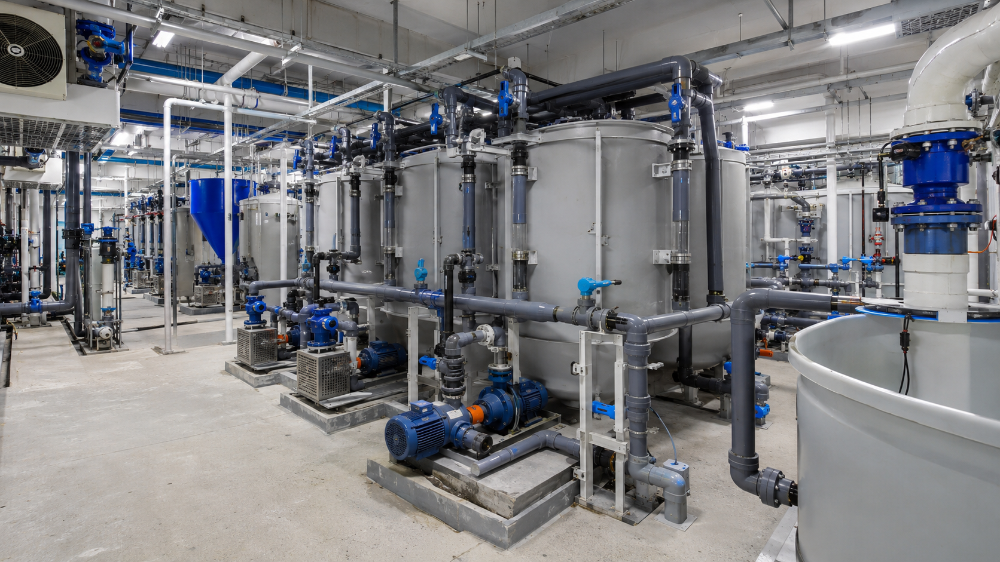

閉鎖循環式陸上養殖では、限られた水を循環させながら使うため、水処理設備のバランスが重要になります。ろ過、酸素供給、殺菌、排水、洗浄のどれか一つだけを強化しても、施設全体の運用が安定するとは限りません。

水質管理は単独設備では完結しない
水槽内では、餌、排泄物、有機物、酸素消費が同時に発生します。物理ろ過で固形物を取り、必要に応じて生物ろ過や殺菌設備を組み合わせ、酸素供給と水流を調整する必要があります。
設備ごとの役割が曖昧なまま導入すると、ろ過槽の目詰まり、ポンプ負荷、清掃頻度の増加など、別の運用課題が出やすくなります。
確認すべきポイント
- ろ過方式
物理ろ過、生物ろ過、ろ材、目詰まり、清掃頻度、交換部材を確認します。
- 酸素供給
魚種、水温、密度、給餌量に合わせて必要な酸素供給方法を検討します。
- 配管と流量
循環ライン、補給水ライン、排水ラインの流量と圧力条件を整理します。
- 点検しやすさ
ストレーナー、バイパス配管、メンテナンススペース、停止可能時間を確認します。
UFB DUALの位置づけ
UFB DUALは、既存のろ過装置や酸素供給装置を置き換えるものではありません。補給水や循環ラインに組み込み、水質管理を支援する技術として検討します。
条件により期待される効果は異なるため、魚種、水量、既存設備を確認した個別設計が必要です。導入前には、どのラインに入れるか、既存設備と干渉しないか、清掃や点検がしやすいかを確認します。
設計時の考え方
水質管理の目的は、装置を増やすことではなく、日々の運用で管理しやすい水の流れをつくることです。測定値だけでなく、清掃時間、設備停止のしやすさ、部材交換の頻度も含めて検討します。